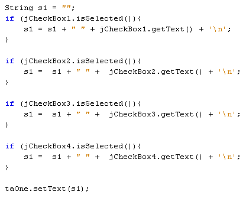

A check box is a way to allow your users to select and deselect items. They can be a little fiddly, though, so it's a good idea to add them to a panel. That way, you can move them all at once just by moving the panel.
So add a panel to your form, which can be found under Swing Containers in the NetBeans palette. Now locate the check box control. Drag a check box onto your panel.
The text jCheckBox1 is the default text. You can change this either in the properties window, or by right-clicking the check box. From the menu that appears, select Edit Text (we've chopped a few menu items off the list, in the image below):
When you click on Edit Text, the default text will be highlighted:
Type C Sharp over the top of the highlighted text:
Press the enter key on your keyboard to confirm the change. The text will change for your check box:
However, this just changes the text, and not the variable name. The variable name will still be jCheckBox1, as you can see in the Inspector area to the left:
Leave it on the default variable name. But just be aware that changing the text of a control does not change its variable name.
Now that you have added one check box to your panel, add three more. Change the text of the three to: Java, PHP, and Visual Basic. Your check boxes will then look like this:
What we'll do is to get the items that a user has checked. We'll do this when a button is clicked. To display the items, we'll use the Text Area control, rather than a text field.
So add a button to your form. Change the variable name to btnCheckBoxes. Change the text on the button to Selected Items.
Locate the Text Area control in the NetBeans palette, and drag one onto your form. Change the variable name to taOne.
When you've aligned your new controls, your form should look something like this:
Now for the code.
Java checkboxes have a property called isSelected. We can use this in a series of IF Statements to see if each box is selected or not. If they are, we can build up a string, adding the text from each check box.
Double click your new button to create a code stub. Add the following code:

The string we're building up is called s1. If a check box is selected then we get the text from that check box. This is then stored in the s1 variable, along with a new line character ( '\n') The last line of code sets the text for the text area. In between the round brackets of setText, we have the s1 variable, which is the string we're building up.
When you've finished typing the code, run your programme. Select a few check boxes and then click the button. You should find that the items you checked appear in the text area:
Deselect a box or two and try again. Only the boxes selected should appear in the text area.
In the next lesson, we'll take a look at Radio Buttons.